|
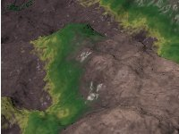 |
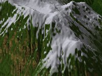 |
|
| Version 0.40 et ultérieure - geomorph.inc peut être utilisé à la place de maprock1.inc, geomorph_txtr.inc et slope_patterns.inc. Ce fichier inclut les 3 autres. - Quand geomorph.inc est utilisé, toutes les déclarations png "test.png" dans cette page doivent être remplacées par png main_terrain |
| maprock1.inc |
Fournit une carte de couleurs,
généralement utilisée avec un motif de gradient
pour simuler une roche sédimentaire. La carte de couleur peut
aussi être utilisée pour simuler des bandes de nuages sur
une planète gazeuse géante. La couleur de base est
paramétrable par l'utilisateur. Les bandes ne
représentent qu'une variation de densité à partir
de cette couleur. Vous pouvez générer votre propre carte de couleurs à l'aide du programme "colmap" (expliqué plus bas). |
| geomorph_txtr.inc |
Fournit des textures de sable,
d'herbe et de granite, dont le granite humide du tutoriel sur les
crevasses. |
| slope_patterns.inc |
Fournit des textures de roches,
de forêt, d'arbustes et de neige variant selon la pente. La neige
apparaît aux altitudes plus élevées. La
forêt, les arbutes ou la neige sont remplacés par le roc
nu lorsque la pente est trop raide. |
| painted_desert_map1.inc painted_desert_map2.inc painted_desert_map3.inc |
Ces fichiers définissent
des cartes de couleurs dans des teintes pastel tirant sur le rouge,
sous le nom de ground_map, pour
être utilisées comme gradients simulant les couleurs du
Désert Paint de l'Arizona. Il s'agit de couleurs réelles,
échantillonnées sur des diapositives Kodachrome prises 2
à 3 heures après le lever du soleil. La variable col_density peut être
utilisée pour ajuster la densité globale de ces couleurs. |
| Utilisation |
Résultat |
| De base: #declare rock_color=<0.55,0.45,0.3>; // Obligatoire #include "maprock1.inc" ... height_field { png "test.png"
}smooth texture {pigment {gradient y color_map{rock_map} scale 0.5} } scale < 1.0, 0.3, 1.0 > translate <-.5, 0.0, -.5> Ici nous réduisons la texture de moitié (0.5), afin de répéter les bandes une fois (2 cycles), autrement elles sont difficiles à voir. |
 |
| De base, sur une sphère: #declare rock_color=<0.55,0.45,0.3> ; #include "maprock1.inc" ... sphere { <0,0,0> 1 texture
{pigment {gradient y color_map{rock_map}} }
}Voyez comment la texture est répétée. On distingue une coupure nette à l'équateur. Pour obtenir le gradient complet sans répétition, il faut le déplacer de 50% sur l'axe Y et l'étirer de 200% sur ce même axe: texture {pigment {gradient y color_map{rock_map}} translate 0.5 scale 2 } |
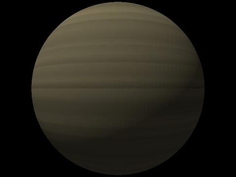 |
| Ajoutons de la turbulence,
utilisons une autre couleur: #declare rock_color=<0.5,0.5,0.2> ; #include "maprock1.inc" ... sphere { <0,0,0> 1 texture {
}pigment {gradient y color_map{rock_map} warp {turbulence 0.1} } // end of pigment } |
 |
| Ici le gradient est
réutilisé comme une normale. Nous #déclarons le
pigment dans une variable pour en faciliter la réutilisation: #declare strata = pigment {gradient y color_map{rock_map} warp {turbulence 0.1}} sphere { <0,0,0> 1 texture {
}pigment { strata } normal { pigment_pattern {strata} 1.5 } // 1.5 est l'intensité ("hauteur") de la déformation normale } |
 |
| Maintenant nous
réutilisons le pigment comme une normale sur un terrain, pour
accentuer les couches sédimentaires: #declare rock_color=<0.55,0.45,0.3> ; #include "maprock1.inc" ... #declare strata = pigment {gradient y color_map{rock_map} warp {turbulence 0.1}} height_field { png "test.png"
}smooth texture {pigment {strata} normal {pigment_pattern{strata} 1.0} scale 0.3} scale < 1.0, 0.3, 1.0 > translate <-.5, 0.0, -.5> Nous avons choisi une intensité de 1.0. Celle utilisée sur la sphère était un peu trop forte, à 1.5. |
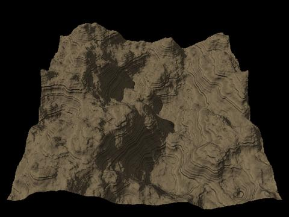 |
| La carte de couleurs peut aussi
être utilisée avec d'autres motifs qu'un gradient. ... #declare strata = pigment{granite color_map {rock_map} } sphere { <0,0,0> 1 texture
{pigment
{strata} normal{pigment_pattern{strata} 1.0 }}
} |
 |
| Texture
et utilisation |
Result |
| sand1:
Sable du désert ou d'un fond marin présentant une normale
ondulante, à utiliser de préférence sur un plan de
sol ou un terrain très lisse. Ici le terrain a été
lissé avec un rayon de 30, puis le contraste a été
abaissé à -35. #declare sand_color=<0.75,0.55,0.35>; // Spécification optionnelle; lorsque absente, cette couleur est utilisée #include "geomorph_txtr.inc" ... #declare hf= height_field { png "test.png" smooth scale < 1.0, 0.3, 1.0 > translate <-.5, 0.0, -.5> } ... object {hf texture {sand1 scale 0.01 rotate y*45} } Notez comment la texture est réduite (scale 0.01) pour montrer les ondulations. |
 |
| shore_granite:
Une texture complexe utilisée dans le tutoriel sur les crevasses. Le
bas imite un granite humide. Au niveau des vagues croissent des algues
allant du jaune au vert. Enfin, les sommets peuvent être couverts
d'herbe, selon l'échelle donnée à la texture. #declare granite_density=1.5; // Optionnel. Déclarer seulement si vous désirez une valeur différente de 1.2 (ex. 1.5 pour une texture plus claire, 1.0 pour une texture plus foncée). #declare granite_ambient_finish = 0.0; // Optionel. Augmenter pour obtenir des ombres plus douces. La valeur par défaut est 0.2. #include "geomorph_txtr.inc" ... #declare hf=... // Voir l'exemple précédent ... object {hf texture {shore_granite} } |
 |
| granite_1:
Un granite qui simule des crevasses à l'aide d'une normale. La
densité peut être réglée. Remarquez le nom
de la variable: granite1_density
plutôt que granite_density.
Le
terrain de 512x512 a été lissé avec un rayon de
30 pixels. #declare granite1_density=1.0; // Optionel; le défaut est 1.0 #declare granite1_grain_scale=1.0; // Optionel; le défaut est 1.0; donner une valeur > 2 pour voir une différence réelle #include "geomorph_txtr.inc" ... #declare hf=... ... object {hf texture {granite_1 scale 0.5} } |
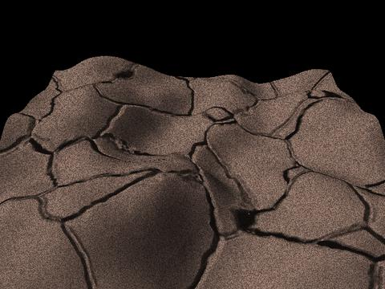 |
| granite_2:
Une composante de la texture shore_granite.
À grande échelle, l'apparence est celle d'un roc
raboteux. La densité peut être réglée
à l'aide de la variable granite_density. #declare granite_density=1.5; // Optionel; le défaut est 1.5 #include "geomorph_txtr.inc" ... #declare hf=... ... object {hf texture {granite_2 scale 0.5} } |
 |
| granite_2:
Maintenant avec une petite échelle. #declare granite_density=1.5; #include "geomorph_txtr.inc" ... #declare hf=... ... object {hf texture {granite_2 scale 0.02} } |
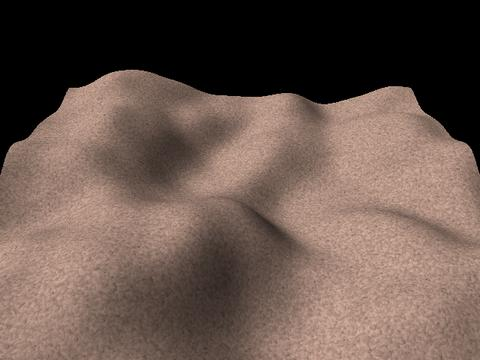 |
| t_grass:
Une texture herbeuse composée du pigment p_grass réutilisé
comme une normale. #declare grass_density=1.0; // Optionel; le défaut est 1.0 #declare grass_scale=1.0; // Optionel; le défaut est 1.0; vous pouvez spécifier cette échelle directement dans la texture #include "geomorph_txtr.inc" ... #declare hf=... ... object {hf texture {t_grass scale 0.5} } Ou encore: object {hf texture {pigment {p_grass} normal {pigment_pattern{p_grass} 1.0} scale 0.5} } |
 |
| 1.
forest Une texture foncée avec des bosses qui ressemblent à des arbres vus de loin. La couleur est échantillonnée à partir d'une photographie de la taïga d'épinettes noires du Québec. Vous voudrez probablement accroître sa luminosité pour simuler des feuillus. Une apparence plus fine peut être produite en initialisant à 1.0 la variable optionnelle UseGranite (côté droit de l'image). #declare forest_color_density=1.2; // Optionel. Défaut de 1.0, adéquat pour un gradient, mais paraît trop sombre lorsque la texture est utilisée seule comme ici // Augmentez encore pour simuler des feuillus #declare forest_normal=1.0; // Optionel. Augmentez pour accentuer la profondeur les bosses, diminuez pour les réduire. #declare forest_normal_scale=1.0; // Optionel. Grandeur relative des bosses. #declare UseGranite=0 ; // Régler à 1.0 pour utiliser un motif de granite plutôt que des bosses, pour obtenir une texture plus "fine". #include "slope_patterns.inc" ... #declare hf= height_field { png "test.png" smooth scale < 1.0, 0.3, 1.0 > translate <-.5, 0.0, -.5> } ... object {hf texture {forest}} // Vous voudrez probablement mettre à l'échelle la texture selon la nature du terrain ( ex. {forest scale 1.5}, ou utilisez la variable forest_normal_scale). |
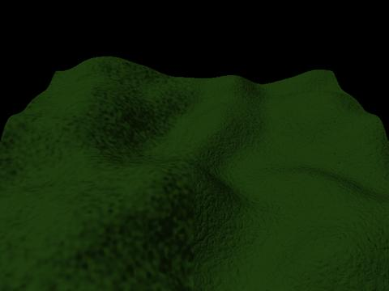 |
| 2.
bushes Quand l'altitude ou la pente augmente, les arbres se font plus rares. Ils sont remplacés par des arbustes, qui ont souvent l'air plus pâle que les arbres. UseGranite fonctionne aussi pour cette texture. #declare bushes_color_density=1.2; // Optionel. La valeur par défaut est héritée de forest_color_density. #declare bushes_normal=1.0; // Optionel. Accentuation du motif. #declare UseGranite=0 ; #include "slope_patterns.inc" ... #declare hf=... // Voir l'exemple précédent ... object {hf texture {bushes}} |
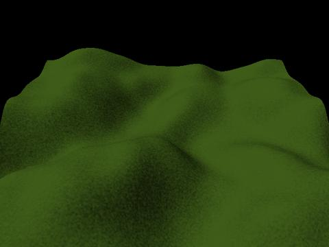 |
| 3.
snow Une texture de neige standard, avec un léger motif. Une suggestion: essayez d'augmenter l'échelle du motif bumps pour voir la différence. L'échelle par défaut est appropriée pour un point de vue distant, c'est pourquoi le motif a plutôt l'air granuleux. #declare snow_density=0.8; // Optionel. Vaut 1.0 par défaut. En l'absence de nuages ou d'une légère brume, avec une valeur de 1.0, les hautes lumières sembleront "brulées". #declare snow_color=<0.95,0.95,1.0>; // Optionel. La valeur par défaut est montrée - un blanc bleuté. #include "slope_patterns.inc" ... #declare hf=... // Comme ci-haut. ... object {hf texture {snow}} |
 |
| 4.
gradient_rock_snow Cette texture donne un terrain rocheux avec de la neige au sommet, indépendamment de la pente. La couleur du roc, sa normale, son échelle et sa turbulence, de même que la couleur de la neige, sa densité et son altitude de départ peuvent être contrôlées. Toutes les variables sont optionnelles. Un conseil: si vous ne désirez pas les bandes sédimentaires, augmentez l'échelle du pigment du roc (rock_pigment_scale) à une grande valeur comme 10. Augmentez rock_normal à 1.5 ou 2.0 pour accentuer le caractère granuleux du roc. La partie gauche de l'image montre le résultat obtenu avec toutes les variables laissées à leur valeur par défaut, tandis que le côté droit présente le résultat obtenu lorsque l'échelle des bandes sédimentaires est augmentée à 10, pour ne plus les voir, et lorsque le caractère granuleux est accentué en augmentant rock_normal à 1.5. // Contrôle de la neige #declare snow_density=1.0; #declare snow_color=<0.95, 0.95, 1.0>; #declare snow_height=0.5; // Altitude relative de l'enneigement. La valeur par défaut est 0.5. // Contrôle du roc #declare rock_normal=1.0; // Amplitude des bandes et de la granulation #declare rock_color=<0.7,0.6,0.3>; #declare rock_scale=1.0; // Échelle globale #declare rock_pigment_scale=1.0; // Pour mettre à l'échelle les bandes seulement, sans la granulation #include "slope_patterns.inc" ... #declare hf=... // Comme ci-haut ... object {hf texture {gradient_rock_snow}} |
 |
| 5.
gradient_forest_snow Un autre gradient simple, avec la neige et la forêt séparés par une légère couche d'arbustes. toutes les variables déjà vues pour forest et snow peuvent être contrôlées. // Contrôle de la neige #declare snow_density=1.0; #declare snow_color=<0.95, 0.95, 1.0>; #declare snow_height=0.5; // Contrôle de la forêt declare forest_color_density=1.0; #declare forest_normal=1.0; #declare forest_normal_scale=1.0; // Contrôle des arbustes #declare bushes_color_density=1.0; #declare bushes_normal=1.0; #declare bushes_normal_scale=1.0; #declare UseGranite=0 ; #include "slope_patterns.inc" ... #declare hf=... // Comme ci-haut ... object {hf texture {gradient_forest_snow}} |
 |
| 6.
gradient_forest_bushes Variante du gradient (5), sans la neige. Ici la densité de la couleur des arbustes a été augmentée à 1.1 et celle de la couleur de la forêt diminuée à 0.9, pour accentuer le contraste etnre les deux couches. La variable UseGranite peut aussi être utilisée pour cette texture, afin de remplacer les bosses (bumps) par un motif de granite, plus "fin". Un conseil: pour augmenter l'altitude à laquelle les arbustes commencent, augmentez l'échelle de la texture (comme montré). Pour diminuer cette altitude, augmentez l'échelle de la texture et déplacez-la vers le bas sur l'axe Y. Dans ce dernier cas, l'augmentation de l'échelle est requise pour éviter un "cycle", c'est-à-dire la répétition de la couche d'arbustes au pied des montagnes ou de couche forestière au sommet. L'augmentation de l'échelle de la texture augmente aussi l'échelle de la normale, c'est-à-dire le grain de la forêt et des arbustes. Pour obtenir un grain constant, diminuez l'échelle des variables <...>_normal_scale par le même ratio, comme montré. // Contrôle de la forêt declare forest_color_density=0.9; #declare forest_normal=1.0; #declare forest_normal_scale=1.0/1.5; // Contrôle des arbustes #declare bushes_color_density=1.1; #declare bushes_normal=1.0; #declare bushes_normal_scale=1.0/1.5; #declare UseGranite=0; #include "slope_patterns.inc" ... #declare hf=... // Comme ci-haut ... object {hf texture {gradient_forest_bushes scale 1.5}} |
 |
| 7.
slope_snow_rock Notre première texture dépendant de la pente. Les parties les plus à pic sont au roc nu, les autres parties sont couvertes de neige. La variable adhesion contrôle le degré de couverture de la neige (0.0 -> pas de neige; 1.0 -> de la neige partout). // Contrôle de la neige #declare snow_density=1.0; #declare snow_color=<0.95, 0.95, 1.0>; // Contrôle du roc #declare rock_normal=1.0;/ / Amplitude des bandes et de la granulation #declare rock_color=<0.7,0.6,0.3>; #declare rock_scale=1.0; // Échelle globale #declare rock_pigment_scale=1.0; // Utilisez pour mettre à l'échelle les bandes seulement, sans le grain // Adhérence de la neige #declare adhesion=0.6; // Le défaut est 0.5 #include "slope_patterns.inc" .. #declare hf=... ... object {hf texture {slope_snow_rock}} |
 |
| 8.
slope_forest_rock Un concept similaire à slope_snow_rock, avec des arbustes et une forêt plutôt que de la neige. La variable adhesion est exploitable de la même façon. Habituellement, les arbres ne croissent pas sur les parties les plus abruptes des montagnes. Ils sont progressivement remplacés par des arbustes ou de l'herbe, eux-mêmes remplacés par du roc nu lorsque la pente croît davantage. En conséquence, l'"adhérence" de la composante forest est inférieure à celle de la composante bushes, même si une seule variable contrôle ces deux composantes. // Contrôle du roc #declare rock_normal=1.0; / / Amplitude des bandes et de la granulation #declare rock_color=<0.7,0.6,0.3>; #declare rock_scale=1.0; // Échelle globale #declare rock_pigment_scale=1.0; // Utilisez pour mettre à l'échelle les bandes seulement, sans le grain // Contrôle des arbustes #declare bushes_color_density=1.0; #declare bushes_normal=1.0; // Adhérence des arbustes et de la forêt #declare adhesion=0.5; // Défaut de 0.5 #declare UseGranite=0; #include "slope_patterns.inc" .. #declare hf=... ... object {hf texture {slope_forest_rock}} |
 |
| 9.
slope_rock_bushes // Contrôle des arbustes #declare bushes_color_density=1.0; #declare bushes_normal=1.0; // Adhérence des arbustes #declare adhesion=0.5; // Défaut de 0.5 #declare UseGranite=0; #include "slope_patterns.inc" .. #declare hf=... ... object {hf texture {slope_rock_bushes}} |
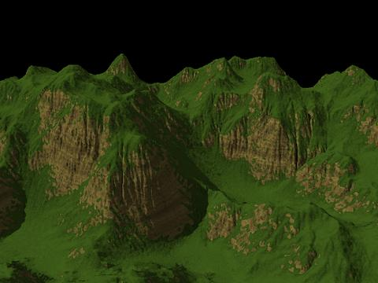 |
| 10.
rock_top_snow Cette texture varie à la fois selon l'altitude et selon la pente. Elle combine (4) gradient_rock_snow et (7) slope_rock_snow. // Contrôle de la neige #declare snow_density=1.0; #declare snow_color=<0.95, 0.95, 1.0>; #declare snow_height=0.4; // Contrôle du roc #declare rock_normal=1.0; #declare rock_color=<0.7,0.6,0.3>; #declare rock_scale=1.0; #declare rock_pigment_scale=1.0; // Adhérence de la neige #declare adhesion=0.5; // Défaut de 0.5 #include "slope_patterns.inc" .. #declare hf=... ... object {hf texture {rock_top_snow}} |
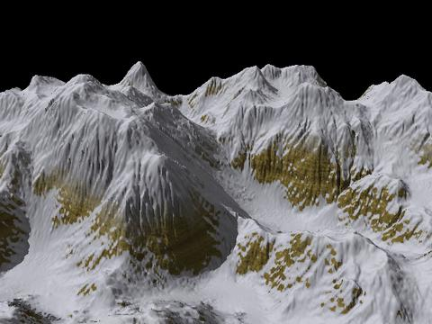 |
| 11.
forest_rock_snow Cette texture correspond en gros à (8) slope_forest_rock, à laquelle on a superposé un gradient qui ajoute de la neige au sommet. La neige ne dépend que de l'altitude, pas de la pente. // Contrôle de la neige #declare snow_density=1.0; #declare snow_color=<0.95, 0.95, 1.0>; #declare snow_height=0.5; // Contrôle du roc #declare rock_normal=1.0; #declare rock_color=<0.7,0.6,0.3>; #declare rock_scale=1.0; #declare rock_pigment_scale=1.0; // Adhérence de la neige, des arbustes et de la forêt #declare adhesion=0.7; // Défaut de 0.5 #declare UseGranite=0; #include "slope_patterns.inc" .. #declare hf=... ... object {hf texture {forest_rock_snow}} |
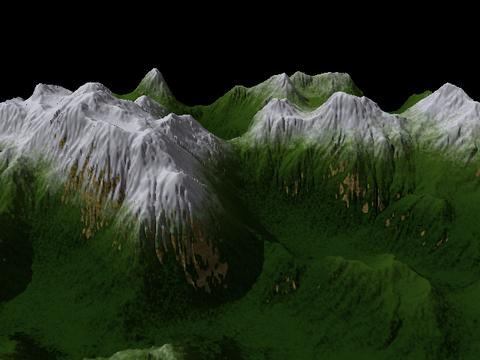 |
| 12.
forest_rock_snow_bushes Ici on reprend (11) forest_rock_snow en faisant aussi dépendre la neige de la pente. // Contrôle de la neige #declare snow_density=1.0; #declare snow_color=<0.95, 0.95, 1.0>; #declare snow_height=0.5; // Contrôle du roc #declare rock_normal=1.0; #declare rock_color=<0.7,0.6,0.3>; #declare rock_scale=1.0; #declare rock_pigment_scale=1.0; // Adhérence de la neige, de la forêt et des arbustes #declare adhesion=0.7; // Défaut de 0.5 #declare UseGranite=0; #include "slope_patterns.inc" .. #declare hf=... ... object {hf texture {forest_rock_snow_bushes}} |
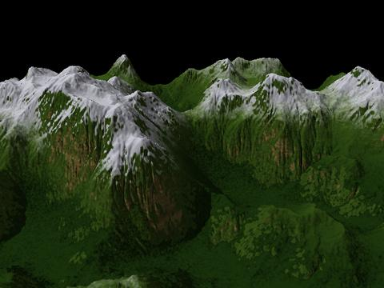 |
| 1.
painted_desert_map1.inc La texture a été mise à l'échelle à 0.35 pour l'adapter à l'axe Y du relief, réduit comme à l'habitude à 0.3. La texture doit être légèrement plus grande que le relief pour éviter un cycle (la couche du haut étant répétée au bas, ou l'inverse). L'altitude des couches sédimentaires n'est pas uniforme en raison du facteur de turbulence de 0.1. Cela augmente le risque d'entremêlement de la couche du sommet et de celle de la base, lorsque la mise à l'échelle de la texture est insuffisante. #include "painted_desert_map1.inc" ... #declare hf= height_field { png "test.png" smooth scale < 1.0, 0.3, 1.0 > translate <-.5, 0.0, -.5> } ... object {hf texture { pigment {gradient y color_map {ground_map} translate y*-0.1 turbulence 0.1 scale 0.35 } } } |
 |
| 2.
painted_desert_map2.inc #include "painted_desert_map2.inc" ... // Le reste du fichier est toujours le même, peu importe le fichier "include" utilisé dans cette série. |
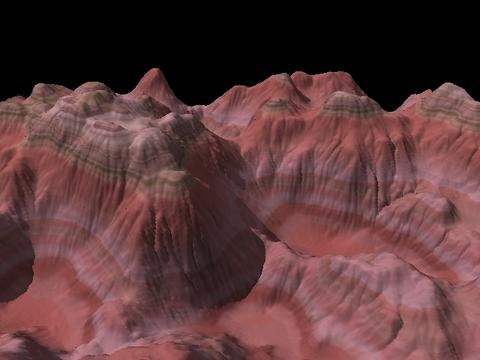 |
|
3. painted_desert_map3.inc #include "painted_desert_map3.inc" ... |
 |
 Retour à l'index de la
documentation
Retour à l'index de la
documentation